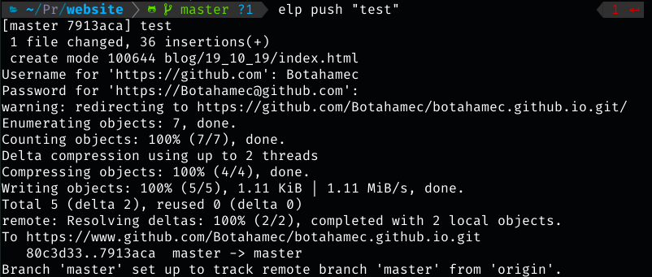
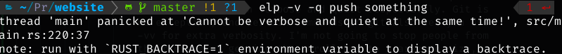

Elp 1.1 To The Rescue
So I've been using Elp for a while now and even though I love it and it makes a lot of tasks simpler for me, I must admit that it has some issues. So over the past weekened, I took the time to iron out some of the kinks and I think it is now 100% better. So allow me to explain what has changed
What is Elp?
Some of you probably don't follow this blog well enough to actually know what Elp is, so let me explain. Elp is a command-line tool used to make many common tasks easier, such as committing. It takes a few commands to actually make a change. First, you have to add all the files. Then, you have to commit your changes. And THEN, you have to actually push your commits. I found this process unnecessary. So I simplified it to one command: "elp push [TITLE] -m <MESSAGE>". The message at the end is optional if you haven't figured that out.
O HAIL OUTPUT
Any output from the git commands will now be outputted by Elp. You're welcome.
"Wait. Why wasn't that there before?"
... Because... Ok I don't really have a good excuse.
Changes to Existing Commands
Not gonna lie, the "elp start" command is pretty useless if you don't specify a URL. So it no longer requires the -u and instead just requires a URL to run.
# before
elp push -u https://github.com/Botahamec/elp.git
# after
elp push https://github.com/Botahamec/elp.git
There have been many times when I did "elp push", typed my password wrong, and then typed "elp push" again, which led to two commits being created. This was pointless, so I fixed that by adding a -n (--no-commit) option to the command. When this option is passed in, no commit is made, and Elp simply pushes
New Flags
It's common for command line tools to have -v and -q options, which mean verbose and quiet respectively. Git is no exception, and certain commands in git also let you use -vv for extra verbosity. I'm not going to stop people from their dream of getting the scroll bar to near-zero size, so I added that to Elp as well.
For those of you who didn't figure it out, verbose means that extra stuff is outputted and quiet means that nothing is outputted. No, you cannot be both quiet and verbose at same time. Elp will yell at you.
I should also mention that both of these flags need to be used before the subcommand. That's another thing I can fix for Elp 1.1.1 or maybe Elp 1.2.
The Source Code has an Update Command?
Ok so here's the thing. I added a command to update Elp, but it requires a shell script in order to be run. The thing is, most people won't have the shell script, and wouldn't be able to run the command, so I commented it out. That definitely would be fixed before I release Elp 1.2. I just need to figure out where the shell scripts would be installed. (I also just realized that I probably would want to provide an easy way to uninstall them in this scenario)
Captain Miscellaneous
I loved doing this segment last time, so we're doing it again. In case it's unclear, Captain Miscellaneous is my character, who asks me questions about how my weeks been going, in the most aggressive way possible. Alright, Cap, take it away.
"You promised a couple of videos by the end of the week..."
Ok, so I consider Sunday to be the last day of the week, so I still actually have time. The one video I want to make is actually pretty short, I just need a quiet place to record it. The other video I want to make is just a timelapse of me making Elp 1.1, so really I just need to edit it.
TLDR: I'm working on it
"The documentation for Elp doesn't mention anything you talked about today"
Yeah. I have basically no free time at the moment. I've been busy pretty much the entire week. A last week, I was super productive, and I managed to make my own fork of Rawr as well as the DevHumor discord bot, but this week was not as kind. My current plan is to get my discord bots up and running this weekend, then next week I'll complete Webster, and the following week, I want to go back and update the documentation for all of my previous projects.
"How is your week?"
Wow, that's an excellent question. I went home last weekend for Indigenous People's Day Break, my family came to the Rochester Institute of Technology this week to visit for Brick City Homecoming, and I got to see Anderson Cooper. Not gonna lie, I could share some great stories, but I think that would be invading his privacy. The rest of the week was just a lot. I have a bunch of exams and homework that got crammed into three days, but I got a lot done so far, so hopefully my schedule next week will be clear.